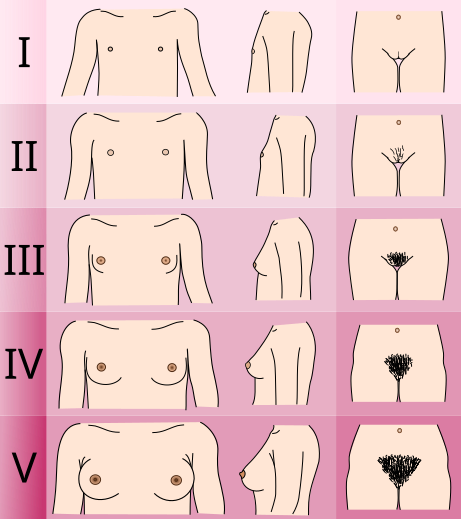

Bela tem 7 anos, é a mais alta da turma, já tem mama e pelos pubianos, e dois médicos diferentes olharam para ela e disseram à mãe a mesma coisa: "é assim mesmo, deixa rolar — daqui a pouco ela menstrua, vida que segue". A mãe está tranquila e orgulhosa da filha saudável. Antes de concordar com ela, vale uma pergunta: tudo o que você aprendeu sobre puberdade fisiológica encaixa numa menina de 7 anos M4 P3 — ou alguma coisa aqui está fora do lugar?
Bela, 7 anos, "deixa rolar": o caso que abre tudo

Esquema de referência
Mama e pelos são eixos independentes: M4 marca o "duplo contorno" (aréola e papila projetadas acima do contorno da mama), P3 marca pelos escuros e espessos sobre a sínfise. Em Bela, os dois aparecem juntos e cedo — e é o cruzamento com a idade que muda tudo.
A menina mais alta da turma
Bela é uma escolar de 7 anos, levada a uma consulta de rotina. A mãe está satisfeita: a filha é saudável e vem crescendo bastante — na última festa da escola, era a mais alta entre todas as colegas. Para a mãe, isso é uma boa notícia. Guarde essa frase, porque ela é uma armadilha: "a mais alta da turma" vai se revelar, mais adiante, exatamente o sinal que deveria preocupar. A mãe ainda relata a cronologia: o desenvolvimento das mamas começou há pouco mais de 8 meses (por volta dos 6 anos), seguido pelo aparecimento dos pelos pubianos. E acrescenta o que tranquilizou os dois médicos anteriores: "outro médico já pediu exames e disse que era assim mesmo".
O que o exame e os exames mostraram
Ao exame físico, o que se encontra não é discreto. A mama apresenta tecido glandular estendendo-se além dos limites da aréola, com aréola e papila formando uma projeção acima do contorno da mama — isso é mama em estágio M4 (M4 é o estágio do "duplo contorno"). Há ainda pelos escuros e espessos sobre a sínfise púbica — penificação P3. Some tudo: 7 anos, M4 P3, com aceleração de crescimento. Os exames complementares de Bela: LH e FSH aumentados; ultrassonografia pélvica com útero de conformação puberal (durante a puberdade o formato do útero se altera e o volume uterino e ovariano aumentam — marca de impregnação estrogênica); e uma ressonância magnética de crânio, que veio normal (o motivo de ela ter sido feita fica reservado — voltaremos a Bela no fim, com todas as peças na mão).
Por que "deixa rolar" estava errado
Agora cruze isso com a régua da puberdade fisiológica que você já domina: a janela normal de início da puberdade feminina é dos 8 aos 13 anos — e iniciar antes dos 8 anos é o limite que define o "precoce". Bela tem 7 anos e já está em M4 P3: ela está fora da janela fisiológica, à esquerda do corte. À luz de tudo o que você já sabe, Bela não tem puberdade fisiológica — ela tem uma puberdade precoce. Os dois médicos que disseram "deixa rolar" trataram o desenvolvimento avançado como sinônimo de criança saudável. É o erro exato a desmontar: desenvolvimento puberal antes da hora não é "estar adiantada" — é um diagnóstico que pede causa e, muitas vezes, tratamento.
Toque para revelar; a ficha reaparece com o diagnóstico na última página.
O pin de Bela na zona vermelha é a prova visual do "fora da janela".
Quiz fixação
O caso-âncora e por que um desenvolvimento precoce não é "adiantamento saudável".
-
Bela tem 7 anos, mama M4, penificação P3 e vem sendo a mais alta da turma; dois médicos liberaram como "é assim mesmo". À luz da puberdade fisiológica, qual a leitura correta?
Por que cada alternativa:
- A) É o erro dos dois médicos: confunde "alta/avançada" com "saudável" — exatamente o reflexo a desmontar; criança que se desenvolve antes da janela não está "adiantada", está doente até prova em contrário.
- B) Certa. A virada já está aqui: desenvolvimento puberal (M4 P3) antes dos 8 anos, com aceleração de crescimento, é puberdade precoce — por definição, independentemente de exame.
- C) Inverte a ordem: o diagnóstico de puberdade precoce é clínico (sinal + aceleração + idade), e os exames servem para achar a causa, não para dizer "se há" PP — quem marca aqui acha que precisa de laboratório para enxergar o óbvio clínico.
- D) Confunde diagnóstico com etiologia: a RM investiga a causa de uma PP central, não a existência da PP; Bela tem PP mesmo com RM normal (que, aliás, ela tem).
-
(Verdadeiro ou Falso) "Por ser a mais alta da turma, Bela tem um bom prognóstico de estatura na vida adulta."
Por que cada alternativa:
- A) Cai na mesma armadilha da mãe e dos dois médicos: ler altura atual como boa notícia. Em puberdade precoce, "alta agora" é o anúncio de "baixa depois".
- B) Certa. É o paradoxo que a próxima página vai abrir: a puberdade precoce deixa a criança mais alta agora (por isso Bela é a maior da turma), mas leva a baixa estatura na vida adulta — o estirão precoce vem junto com fechamento precoce das epífises.